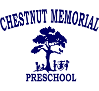

Human-Computer Interaction Project
Spring 2017
This project was completed with 3 other team members. The goal was to conceptually produce an application by working through the UX lifecycle process (analysis, design, implementation, and evaluation). The theme was "Technology on the Trail."
Websites
Summer 2017

The client requested a website for their preschool.